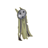
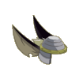
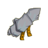
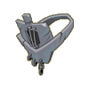
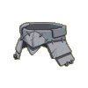
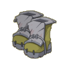
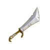

Menu barbok'you

| Niveau 102 | Cape du Rat Blanc | ||
|---|---|---|---|
| Recettes : | Caractéristiques : | Conditions : | |
|  | 35 Poils kanigrou 30 Poils ouginak 20 Poils de rat d'egoutant 10 Poils sanglier des plaines 10 Tissus invisibles 3 Etoffes rat blanc 1 Guenille |
+26 à 40 agilité +21 à 30 force +41 à 70 vitalité +11 à 20 sagesse +1 portée +4 à 6 résistance air +4 à 6 résistance neutre 4 à 6% résistance feu |
aucune |
| Remarques : | |||
| Niveau 105 | Coiffe du Rat Blanc | ||
|---|---|---|---|
| Recettes : | Caractéristiques : | Conditions : | |
|  | 25 Crocs de rat 20 Poils de rat d'egoutant 15 Etoffes de kanigrou 12 Poils de kanigrou 2 Etoffes du rat blanc 1 Poil de chaman d'egoutant 1 Champo |
+51 à 100 vitalité +26 à 35 agilité +16 à 25 force +11 à 20 sagesse +2 à 3 CC +6 à 10% dommages +4 à 6 dommages +101 à 200 initiative +4 à 6 résistance feu |
aucune |
| Remarques : | |||
| Niveau 101 | Gantelet du Rat Blanc | ||
|---|---|---|---|
| Recettes : | Caractéristiques : | Conditions : | |
|  | 50 Dent de dragodinde 10 Os de chafer 10 Aluminite 3 Ambre de bambouto 2 Dent de rat blanc 2 Kobalite 1 Anneau tribal |
+31 à 40 vitalité +21 à 30 agilité +11 à 20 force +11 à 20 sagesse +3 à 4 dommages +4 à 6 résistance air +4 à 6 résistance eau +4 à 6 résistance feu +4 à 6 résistance neutre +4 à 6 résistance terre |
|
| Remarques : | |||
| Niveau 103 | Collier du Rat Blanc | ||
|---|---|---|---|
| Recettes : | Caractéristiques : | Conditions : | |
|  | 20 Ecaille de crocodaille 10 Silex 10 Ecaille de chef crocodaille 5 Colonne vertébrale 3 Ambre de bambouto sacré 2 Dent de rat blanc 1 Amulette du xélor |
+1 PA +31 à 50 vitalité +26 à 35 agilité +16 à 25 force +11 à 20 sagesse +4 à 6 dommages +200 initiative |
aucune |
| Remarques : | |||
| Niveau 102 | Ceinture du Rat Blanc | ||
|---|---|---|---|
| Recettes : | Caractéristiques : | Conditions : | |
|  | 25 Peaux de chaman d'égoutant 3 Rutiles 3 Peaux de rat blanc 2 Peaux de rat d'égoutant 2 Pyrutes 1 Ceinture bontarienne 1 Bakélélite |
+56 à 80 vitalité +26 à 40 agilité +16 à 25 force +3 à 4 CC +3 à 4 dommages +6 à 10 prospection 4 à 6% résistance terre |
aucune |
| Remarques : | |||
| Niveau 99 | Bottes du Rat Blanc | ||
|---|---|---|---|
| Recettes : | Caractéristiques : | Conditions : | |
|  | 32 Cuirs de porkass 15 Peaux de chaman d'égoutant 3 Peaux de rats blancs 1 Peaux de rat d'égoutant 1 Cuir noir 1 Slip en cuir moulant du vampire 1 Paire de bottes volatiles |
+1 PM +41 à 60 vitalité +26 à 40 agilité +16 à 25 force +11 à 15 sagesse +6 à 10 prospection 2 à 3% résistance air |
aucune |
| Remarques : | |||
| Niveau 109 | Epée du Rat Blanc | |||
|---|---|---|---|---|
| Recettes : | Effets : | Caractéristiques : | Conditions : | |
|  | 40 Dents chef de guerre bouftou 40 Dents de wabbit 40 Canine de mulou 6 Rutile 5 Dents du rat blanc 4 Bakélélite 1 Crinière de badoul (une épée) |
Dom : 23 à 38 (air) Vole : 3 à 5 (neutre) +31 à 50 vitalité +11 à 20 force +26 à 40 agilité +4 CC +2 à 3 dommages |
PA : 5 Portée : 1 à 1 Bonus CC : +5 Critique : 1/40 Echec : 1/50 |
agilité > 150 force > 100 |
| Remarques : | ||||
| 1 Items | Aucun bonus |
|---|---|
| 2 Items | +10 Vitalité |
| 3 Items | +15 Vitalité / +10 Force / +10 Agilité |
| 4 Items | +20 Vitalité / +15 Force / +15 Agilité |
| 5 Items | +30 Vitalité / +20 Force / +20 Agilité / +2% Rés. terre / +2% Rés. air |
| 6 Items | +40 Vitalité / +30 Force / +30 Agilité / +5% Rés. terre / +5% Rés. air |
| 7 Items | +1 PA / +50 Vitalité / +40 Force / +40 Agilité / +10% Rés. terre / +10% Rés. air |
Dofus est un MMORPG édité par Ankama." Barbok " est un site non-officiel sans aucun lien avec Ankama.
Toutes les illustrations sont la propriété d'Ankama Studio et de Dofus. Le contenu de ce site a été rédigé initialement par Immortal, il ne s'agit que d'une remise en ligne effectuée par Eternal Games.